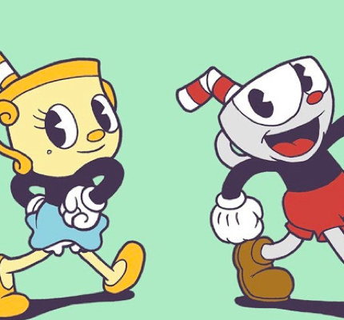

<!DOCTYPE html>
<html><!DOCTYPE html>
  <html>
    <head>
      <title>PlatziGames</title>
      <meta charset="utf-8">
      <meta http-equiv="X-UA-Compatible" content="IE=edge">
      <meta name="viewport" content="width=device-width, maximum-scale=1.0, user-scalable=no">
      <link rel="stylesheet" href="https://fonts.googleapis.com/css?family=Lato:400,400i,700,700i|Oswald:400,500,600,700&amp;display=swap">
      <link rel="stylesheet" href="../../css/article.css">
      <link rel="stylesheet" href="../../css/profile.css">
      <link rel="stylesheet" href="../../css/searching.css">
      <link rel="stylesheet" href="../../css/platzi-games.css">
      <script src="https://kit.fontawesome.com/552ebddad2.js"></script>
    </head>
    <body></body>
  </html>
  <body>
    <header class="header--principal">
      <div class="logo logo--header"></div>
      <nav class="nav--header">
        <ul>
          <li><a class="nav__link" href="https://crissud.github.io/PlatziGames/html/main/pagina-principal.html">Inicio</a></li>
          <li><a class="nav__link" href="https://crissud.github.io/PlatziGames/html/profile/profile.html">Perfil</a></li>
          <li><a class="nav__link" href="https://crissud.github.io/PlatziGames/html/article/articulo.html">Artículos</a></li>
          <li><a class="nav__link" href="https://crissud.github.io/PlatziGames/html/search/searching.html">Búsquedas</a></li>
          <li><a class="nav__link" href="#">Mobile</a></li>
        </ul>
      </nav><a class="header__busqueda" href="#"><i class="fas fa-search"></i><span>Search</span></a>
      <div class="menu-btn">
        <button class="button__menu">
          <figure></figure>
        </button>
      </div>
    </header>
    <section class="intro">
      <div class="intro__imagen"></div>
      <div class="intro__contenido"><span class="intro__categoria">Noticias</span>
        <h1 class="intro__titulo">Cyberpunk 2077 tiene tres prólogos distintos</h1>
      </div>
      <div class="intro__autor"><span class="intro__autor-titulo">Autor</span><span class="intro__autor-nombre">John Wick</span></div>
    </section>
    <article class="articulo--principal">
      <p class="articulo--principal__intro">En Cyberpunk 2077 los jugadores podrán seleccionar entre tres historias de origen diferentes, cada una presentando una ubicación de partida distinta para su personaje.</p>
      <p>Conversando con VG247, el diseñador Pawel Sasko explicó un sistema que CD Projekt RED llama "Lifepaths" (caminos de vida), que en la práctica suena muy similar a las historias sobre el origen del personaje de Dragon Age: Origins.</p>
      <p>Uno de estos caminos de vida comienza en los Badlands, las áridas tierras que rodean Night City (suponemos que es el Nomad). CD Projekt RED no ha ofrecido descripción de las otras áreas, pero parece sensato suponer que los personajes de Corpo podrían comenzar en un distrito más corporativo de Night City, mientras que Street Kids podrían provenir de áreas de barrios marginales.</p>
      <h3>Noticias, fecha de lanzamiento y plataformas de Cyberpunk 2077</h3>
      <p>En otras noticias, recientemente descubrimos que CD Projekt RED tiene planes de desarrollar tres juegos Cyberpunk, y que Cyberpunk 2077 contará con tramas románticas similares a las que vimos en The Witcher 3. Si el romance no es su estilo, no se preocupen, podrán ser tan malvados como deseen gracias a que Cyberpunk 2077 no tendrá un sistema de moralidad.</p>
      <p>Cyberpunk 2077 se pondrá disponible el 16 de abril de 2020 y se lanzará en versiones para PC, PlayStation 4 y Xbox One.</p>
      <h2>No te Pierdas...</h2>
    </article>
    <section class="contenedor--cajas">
        <div class="caja">
          <div class="caja__imagen"></div>
          <div class="caja__contenido"><span class="caja__categoria">Xbox</span>
            <h3>Conoce las actualizaciones de Game Pass</h3>
            <p>A una semana terminado el E3, Microsoft anunció la 1era rotación de juegos para Xbox</p><a>Leer Mas		</a>
          </div>
        </div>
        <div class="caja">
          <div class="caja__imagen"></div>
          <div class="caja__contenido"><span class="caja__categoria">Fortnite</span>
            <h3>Fortnite une fuerzas con Stranger Things</h3>
            <p>Portales hacia el Upside Down han aparecido dentro de Fortnite, y aunque no funcionan igual.</p><a>Leer Mas		</a>
          </div>
        </div>
        <div class="caja">
          <div class="caja__imagen"></div>
          <div class="caja__contenido"><span class="caja__categoria">Cuphead</span>
            <h3>Cuphead se atrasa hasta el año 2020</h3>
            <p>Los miembros de Studio MDHR revelan la razón detrás del atraso de la fecha de lanzamiento.</p><a>Leer Mas		</a>
          </div>
        </div>
    </section>
    <footer class="footer">
      <div class="footer__container">
        <div class="logo logo--footer"></div>
        <nav class="nav--footer">
          <ul>
            <li><a href="#">Playstation</a></li>
            <li><a href="#">Xbox</a></li>
            <li><a href="#">Nintendo</a></li>
            <li><a href="#">PC</a></li>
            <li><a href="#">Mobile</a></li>
          </ul>
        </nav>
        <div class="nav--social">
          <ul>
            <li>Siguenos</li>
            <li><a href="#"><i class="fab fa-instagram"></i></a></li>
            <li><a href="#"><i class="fab fa-pinterest"></i></a></li>
            <li><a href="#"><i class="fab fa-twitter"></i></a></li>
            <li><a href="#"><i class="fab fa-facebook-f"></i></a></li>
          </ul>
        </div>
      </div>
      <div class="footer__copyright">
        <p>© 2020 Derechos reservados CrissUD</p>
      </div>
    </footer>
    <script src="/js/app.js"></script>
  </body>
</html>